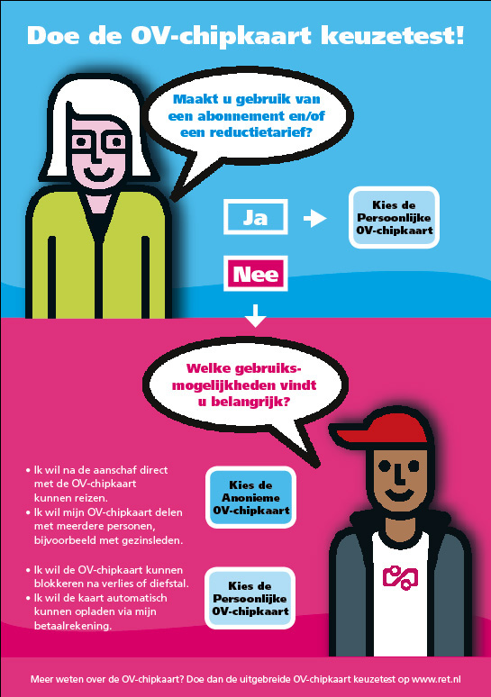

RET en Connexxion klaar voor OV-Chipkaart en ander nieuws...
- vrijdag 05 december 2008 17:28
- Geschreven door Joachim
Op steeds meer stations worden Oplaad- danwel Verkoop & Oplaadautomaten in gebruik genomen. Bij de Oplaadautomaten is het mogelijk een persoonlijke of anonieme chipkaart op te laden. Ook kunnen inmiddels de laatste tien transacties uitgelezen evenals het reisproduct dat op de kaart geladen staat. Bij de Verkoop & Oplaadautomaten kunnen dezelfde functies gebruikt worden, zij het dat hier in de nabije toekomst ook wegwerp- en anonieme OV-Chipkaarten aangeschaft kunnen worden. Bij de Verkoop & Oplaadautomaten kan eveneens met muntgeld betaald worden. Dit is niet mogelijk bij de Oplaadautomaten.
Morgen zullen Stefan Hulman (wethouder Verkeer & Vervoer Rotterdam), Karla Peijs (Minister Verkeer & Waterstaat), Pedro Peters (directie RET) en een directielid van ConneXXion het startsein geven voor de verkoop van de eerste 10.000 OV-Chipkaarten in het Rijnmondgebied. De RET is er klaar voor, zo ook de bussen van ConneXXion op Voorne-Putten en in de Hoeksche Waard. Vermoedelijk kunnen de eerste metroreizigers dan ook een OV-Chipkaart verkrijgen uit de Verkoop & Oplaadautomaten en wordt het gehele systeem op de proef gesteld.
Tevens verschijnen op alle metrostations nieuwe posters met daarop informatie over de binnenkort aan te schaffen OV-Chipkaart. Hierop geven twee figuren "The Kid" en "Tante Jo" korte en wetenswaardige informatie over de OV-Chipkaart. Tevens zijn er reclamespots opgenomen waarin "The Kid" en "Tante Jo" uitleg geven over de OV-Chipkaart in hun "OV-Chipkaartshow".

 Doe de OV-Chipkaartkeuzetest met Tante Jo en The Kid op ret.nl
Doe de OV-Chipkaartkeuzetest met Tante Jo en The Kid op ret.nl
Vrachtwagen rijdt tegen geluidscherm
Vrijdagmiddag 9 december ontstond er een brand op de snelweg A4, ter hoogte van de Beneluxtunnel. De brand ontstond nadat een vrachtwagen een uitwijkmanoeuvre moest maken en hierbij botste met het naast de snelweg gelegen geluidscherm langs de metrobaan tussen de Beneluxtunnel en station Pernis. Het geluidscherm raakte aanzienlijk beschadigd.
Door de hevige rookontwikkeling werd het metroverkeer tijdelijk stilgelegd. De spanning werd van de metrobaan gehaald, waarna de brandweer de vrachtwagen kon gaan blussen. Nadat de ravage die de vrachtwagen aangericht had opgeruimd was, werd het metroverkeer hervat over beide sporen. Tot het zover was, werd er enkelspoorbedrijf gereden tussen wisselcomplex Vijfsluizen en wisselcomplex Deeldijk via spoor 2. Als gevolg van de vertragingen keerden diverse metro's van de Calandlijn met eindbestemming Spijkenisse op keersectie Aveling spoor 15.
 Bekijk nieuwsitem op mediatv.nl
Bekijk nieuwsitem op mediatv.nl
Wisselstoring Kralingse Zoom
Afgelopen maandag ondervond het metroverkeer op de Calandlijn hinder van een wisselstoring nabij station Kralingse Zoom. In wisselcomplex Kralingse Zoom II lagen de wissels vergrendeld, waardoor er geen correcte rijwegen gesteld konden worden naar de sporen 1 en 3 van station Kralingse Zoom.
Metro's met eindbestemming Schiedam Centrum werden ten tijde van de storing de wisselsectie overgestuurd met een hulprijsignaal en vervolgens binnengenomen op Kralingse Zoom perronspoor 1. Dit was ook het geval met de metrodiensten met eindbestemming Kralingse Zoom. Deze keerden in de tunnel, achter wisselcomplex Kralingse Zoom I. Vervolgens werd koers gezet naar Kralingse Zoom spoor 3, om zo te vertrekken naar eindbestemming Binnenhof.
Verdachte koffer
Afgelopen dinsdag werd een verdachte koffer gesignaleerd in de hal van station Wilhelminaplein. Het metrostation werd direct ontruimd en afgesloten. Metro's halteerden tussen 13.00 uur en 14.00 uur niet op het station. Nadat een speciaal getrainde hond de koffer besnuffeld had en te kennen gaf dat er geen explosieven in de koffer aanwezig waren, werd het metroverkeer op normale wijze hervat.
Werkzaamheden Prins Alexanderlaan
Door werkzaamheden aan het fietspad van de Prins Alexanderlaan (Oostzijde) is een deel van de kruisingen Alexander en Graskruid afgesloten voor fietsverkeer. Het fietspad wordt opnieuw aangelegd. Ook de toeritten naar de kruisingen worden vernieuwd. Wanneer werkzaamheden in de buurt van de metrobaan komen, wordt er een veiligheidsman van de RET ingezet om de veiligheid gedurende de werkzaamheden te waarborgen. De werkzaamheden vinden grotendeels gefaseerd plaats.